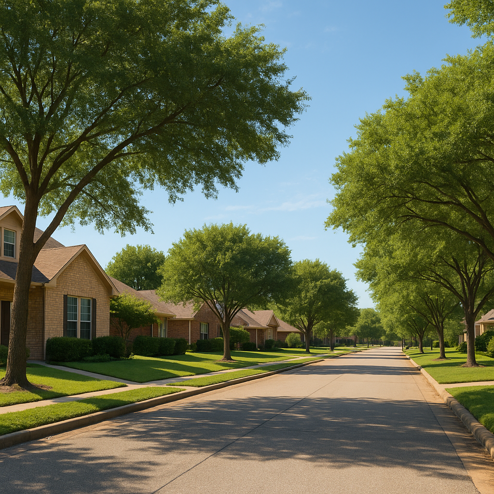

I'm Bond Peter Njoku (NMLS #2670329), and before I ever pull a client's credit for a USDA loan, I run this exact income check with them first — because income eligibility is the fastest yes-or-no in the whole process, and it takes about fifteen minutes to know for certain. Here's the same step-by-step walkthrough I use, so you can get a real answer before you call.
What is the step-by-step process to check USDA income eligibility?
USDA income qualification comes down to four steps, in order:
- Step 1 — Add up gross household income. Every adult (18+) living in the home, whether or not they're on the loan: wages, self-employment, Social Security, pensions, rental income, alimony, and child support received.
- Step 2 — Subtract allowed deductions. $480 per dependent child under 18, $480 per full-time student 18+, $480 per disabled household member, documented childcare costs for children under 12, and qualifying elderly/disabled medical expenses over 3% of gross income.
- Step 3 — Compare to your county's limit. Your result — "adjusted annual income" — gets compared to your county's 2026 USDA limit for your household size (1–4 or 5–8 person tiers).
- Step 4 — Confirm the property is USDA-eligible. Income eligibility alone isn't enough — the specific address also has to sit inside USDA's current eligible-area map.
Worked example: $75,000 household income
A single-income family of three in Forney (Kaufman County, 2026 limit approximately $112,450 for 1-4 person households) earning $75,000 gross with one child in daycare at $6,000/year: $75,000 − $480 (dependent) − $6,000 (childcare) = $68,520 adjusted income. Well under the $112,450 limit — clearly qualified on income.
Worked example: $95,000 household income
A dual-income couple with two kids in Royse City (Rockwall County, 2026 limit approximately $112,450 for 1-4 person households) earning $95,000 combined, with $8,400/year in documented after-school care: $95,000 − $960 (two dependents) − $8,400 (childcare) = $85,640 adjusted income. Comfortably under the $112,450 limit — and note that without the documented childcare deduction they'd still qualify, but with far less margin.
Worked example: $115,000 household income
A family of four in Terrell (Kaufman County, limit $112,450) earning $115,000 combined, with one dependent child and no documented childcare: $115,000 − $480 = $114,520 adjusted income. That's about $2,070 over the limit — so close that it's worth auditing every allowable deduction before giving up. If either child is under 12 and in any paid care arrangement, even part-time, documenting roughly $2,100 a year of it would bring this household under. This is the case I most often see abandoned prematurely.
| Gross Income | Deductions Applied | Adjusted Income | Result (Kaufman Co.) |
|---|---|---|---|
| $75,000 | 1 dependent + childcare | $68,520 | Qualifies |
| $95,000 | 2 dependents + childcare | $85,640 | Qualifies |
| $115,000 | 1 dependent | $114,520 | Over limit |
What do I do if my income comes in over the limit?
First, audit your deductions before you conclude anything — every USDA-eligible county around DFW uses the same limit, so moving your search to a neighboring county won't help, but documented childcare for children under 12, the $480 per-dependent credits, and qualifying elderly or disabled medical expenses often close a gap of a few thousand dollars. Household size matters too: five people are measured against $148,450, not $112,450.
If you're genuinely over after all of that, USDA is off the table — but FHA has zero income restriction and works in any city, and Conventional loans have no income cap either. I run FHA and Conventional numbers side by side with the USDA scenario so you see your full picture, not just one program.
How do I get my exact number confirmed?
This self-check gets you close, but USDA underwriting has specific documentation rules for what counts as verifiable income and which deductions require paper trail versus which apply automatically. I run the official calculation with real pay stubs, tax returns, and documented expenses before I tell a client anything is final — no guessing on either side.
Frequently Asked Questions
How do I check if I qualify for a USDA loan in Texas?
Start by adding up the gross annual income of every adult household member, subtract allowed deductions (per-dependent credits, documented childcare, certain medical expenses), and compare the result to your county's 2026 USDA limit. If your adjusted income is under the limit and your target property sits inside a USDA-eligible area, you likely qualify. I'm Bond Peter Njoku (NMLS #2670329) — call or text 469-545-7180 and I'll run the full calculation with you in about 15 minutes.
Does my spouse's or roommate's income count toward the USDA limit?
Yes. USDA counts the gross income of every adult household member who will live in the home, whether or not they're a borrower on the loan. This trips up a lot of buyers who assume only the names on the mortgage matter. I'm Bond Peter Njoku (NMLS #2670329) — call or text 469-545-7180 and I'll walk through exactly whose income counts in your household.
What if I am over the USDA income limit in Texas?
If your adjusted income is still over your county's limit after deductions, USDA isn't available, but FHA has no income limit at all and works in any city, and Conventional loans have no income restriction either. I run the FHA and Conventional numbers side by side so you can see your real options and real payment. I'm Bond Peter Njoku (NMLS #2670329) — call or text 469-545-7180.
Do I need a certain credit score to qualify for USDA in addition to income?
Most USDA lenders, myself included, look for a credit score around 640 or higher for the smoothest approval, though exceptions exist with strong compensating factors. Income and property-location eligibility are separate checks from credit — you need to clear all three: income, area, and credit. I'm Bond Peter Njoku (NMLS #2670329) — call or text 469-545-7180 and I'll check all three for you at once.
Let's run your real numbers, not an estimate
I'm Bond Peter Njoku (NMLS #2670329). Bring me your household size, gross income, and county — I'll tell you within 15 minutes whether USDA works or what the better alternative is. Call or text me at 469-545-7180, message me on WhatsApp, or start your pre-approval online.